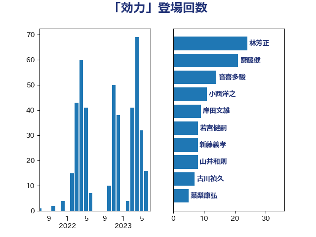

単語「効力」

| 林芳正 | 自由民主党 | 24 回 |
| 齋藤健 | 自由民主党 | 21 回 |
| 音喜多駿 | 日本維新の会 | 14 回 |
| 小西洋之 | 立憲民主党 | 11 回 |
| 岸田文雄 | 自由民主党 | 9 回 |
| 若宮健嗣 | 自由民主党 | 8 回 |
| 新藤義孝 | 自由民主党 | 8 回 |
| 山井和則 | 立憲民主党 | 8 回 |
| 古川禎久 | 自由民主党 | 7 回 |
| 葉梨康弘 | 自由民主党 | 5 回 |
| 浅野哲 | 国民民主党 | 5 回 |
| 岡田直樹 | 自由民主党 | 5 回 |
| 山下貴司 | 自由民主党 | 5 回 |
| 吉田宣弘 | 公明党 | 5 回 |
| 三木圭恵 | 日本維新の会 | 5 回 |
| 藤岡隆雄 | 立憲民主党 | 4 回 |
| 福島みずほ | 社会民主党 | 4 回 |
| 玉木雄一郎 | 国民民主党 | 4 回 |
| 末松信介 | 自由民主党 | 4 回 |
| 山添拓 | 日本共産党 | 4 回 |
| 北神圭朗 | 無所属 | 4 回 |
| 北側一雄 | 公明党 | 4 回 |
| 高橋千鶴子 | 日本共産党 | 3 回 |
| 赤嶺政賢 | 日本共産党 | 3 回 |
| 清水真人 | 自由民主党 | 3 回 |
| 沢田良 | 日本維新の会 | 3 回 |
| 柚木道義 | 立憲民主党 | 3 回 |
| 後藤茂之 | 自由民主党 | 3 回 |
| 山崎正恭 | 公明党 | 3 回 |
| 安江伸夫 | 公明党 | 3 回 |
| 塩村あやか | 立憲民主党 | 3 回 |
| 仁比聡平 | 日本共産党 | 3 回 |
| 鈴木貴子 | 自由民主党 | 2 回 |
| 鈴木義弘 | 国民民主党 | 2 回 |
| 金子道仁 | 日本維新の会 | 2 回 |
| 野村哲郎 | 自由民主党 | 2 回 |
| 田村まみ | 国民民主党 | 2 回 |
| 片山大介 | 日本維新の会 | 2 回 |
| 源馬謙太郎 | 立憲民主党 | 2 回 |
| 松沢成文 | 日本維新の会 | 2 回 |
| 杉久武 | 公明党 | 2 回 |
| 本村伸子 | 日本共産党 | 2 回 |
| 末次精一 | 立憲民主党 | 2 回 |
| 岸真紀子 | 立憲民主党 | 2 回 |
| 山田勝彦 | 立憲民主党 | 2 回 |
| 山本太郎 | れいわ新選組 | 2 回 |
| 小野田紀美 | 自由民主党 | 2 回 |
| 小林鷹之 | 自由民主党 | 2 回 |
| 宮本徹 | 日本共産党 | 2 回 |
| 吉田統彦 | 立憲民主党 | 2 回 |
| 吉田はるみ | 立憲民主党 | 2 回 |
| 高橋光男 | 公明党 | 1 回 |
| 高木かおり | 日本維新の会 | 1 回 |
| 馬淵澄夫 | 立憲民主党 | 1 回 |
| 青柳仁士 | 日本維新の会 | 1 回 |
| 青山大人 | 立憲民主党 | 1 回 |
| 階猛 | 立憲民主党 | 1 回 |
| 阿部司 | 日本維新の会 | 1 回 |
| 門山宏哲 | 自由民主党 | 1 回 |
| 長浜博行 | 無所属 | 1 回 |
| 鈴木宗男 | 日本維新の会 | 1 回 |
| 遠藤良太 | 日本維新の会 | 1 回 |
| 近藤昭一 | 立憲民主党 | 1 回 |
| 足立康史 | 日本維新の会 | 1 回 |
| 西銘恒三郎 | 自由民主党 | 1 回 |
| 藤原崇 | 自由民主党 | 1 回 |
| 藤丸敏 | 自由民主党 | 1 回 |
| 舟山康江 | 国民民主党 | 1 回 |
| 義家弘介 | 自由民主党 | 1 回 |
| 篠原豪 | 立憲民主党 | 1 回 |
| 稲田朋美 | 自由民主党 | 1 回 |
| 福田昭夫 | 立憲民主党 | 1 回 |
| 礒崎哲史 | 国民民主党 | 1 回 |
| 石橋通宏 | 立憲民主党 | 1 回 |
| 石川大我 | 立憲民主党 | 1 回 |
| 石井苗子 | 日本維新の会 | 1 回 |
| 矢倉克夫 | 公明党 | 1 回 |
| 田村貴昭 | 日本共産党 | 1 回 |
| 熊谷裕人 | 立憲民主党 | 1 回 |
| 浜田靖一 | 自由民主党 | 1 回 |
| 浜田聡 | NHK党 | 1 回 |
| 浜口誠 | 国民民主党 | 1 回 |
| 浅田均 | 日本維新の会 | 1 回 |
| 津島淳 | 自由民主党 | 1 回 |
| 河野太郎 | 自由民主党 | 1 回 |
| 森屋隆 | 立憲民主党 | 1 回 |
| 梅村みずほ | 日本維新の会 | 1 回 |
| 有村治子 | 自由民主党 | 1 回 |
| 新垣邦男 | 立憲民主党 | 1 回 |
| 斎藤アレックス | 国民民主党 | 1 回 |
| 斉藤鉄夫 | 公明党 | 1 回 |
| 掘井健智 | 日本維新の会 | 1 回 |
| 徳永久志 | 無所属 | 1 回 |
| 平沼正二郎 | 自由民主党 | 1 回 |
| 平木大作 | 公明党 | 1 回 |
| 川合孝典 | 国民民主党 | 1 回 |
| 岩渕友 | 日本共産党 | 1 回 |
| 山本順三 | 自由民主党 | 1 回 |
| 小野泰輔 | 日本維新の会 | 1 回 |
| 小里泰弘 | 自由民主党 | 1 回 |
| 小田原潔 | 自由民主党 | 1 回 |
| 小沼巧 | 立憲民主党 | 1 回 |
| 小沢雅仁 | 立憲民主党 | 1 回 |
| 小倉將信 | 自由民主党 | 1 回 |
| 寺田静 | 無所属 | 1 回 |
| 宮路拓馬 | 自由民主党 | 1 回 |
| 室井邦彦 | 日本維新の会 | 1 回 |
| 奥野総一郎 | 立憲民主党 | 1 回 |
| 奥下剛光 | 日本維新の会 | 1 回 |
| 太田房江 | 自由民主党 | 1 回 |
| 城内実 | 自由民主党 | 1 回 |
| 城井崇 | 立憲民主党 | 1 回 |
| 國重徹 | 公明党 | 1 回 |
| 嘉田由紀子 | 無所属 | 1 回 |
| 和田義明 | 自由民主党 | 1 回 |
| 勝部賢志 | 立憲民主党 | 1 回 |
| 勝俣孝明 | 自由民主党 | 1 回 |
| 井坂信彦 | 立憲民主党 | 1 回 |
| 井上哲士 | 日本共産党 | 1 回 |
| 中谷一馬 | 立憲民主党 | 1 回 |
| 上田英俊 | 自由民主党 | 1 回 |
| こやり隆史 | 自由民主党 | 1 回 |